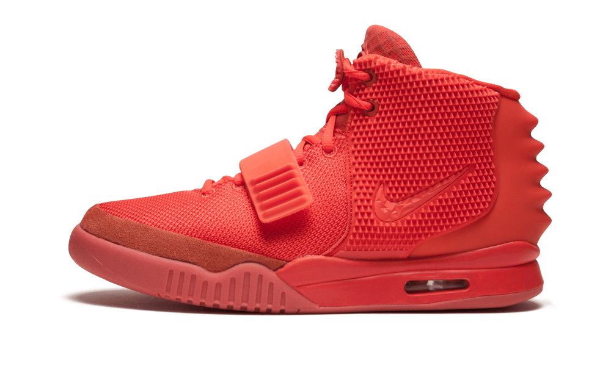
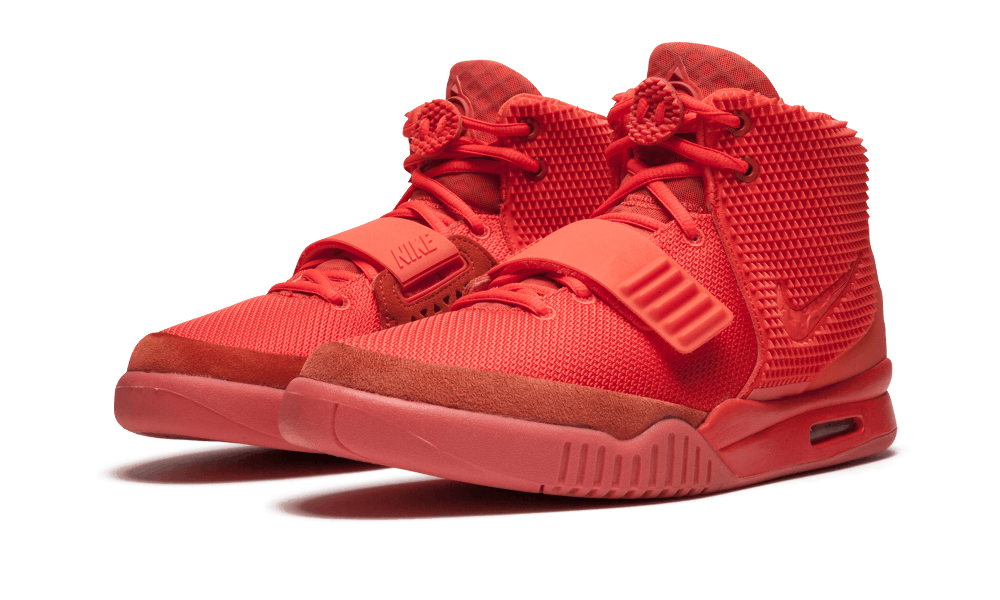
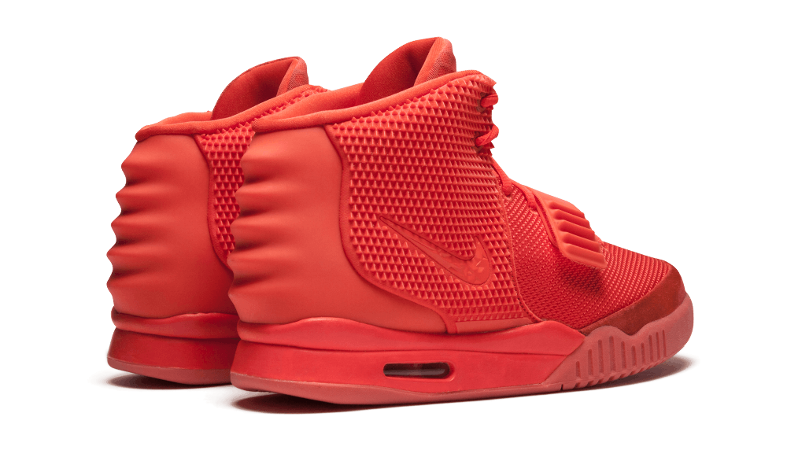
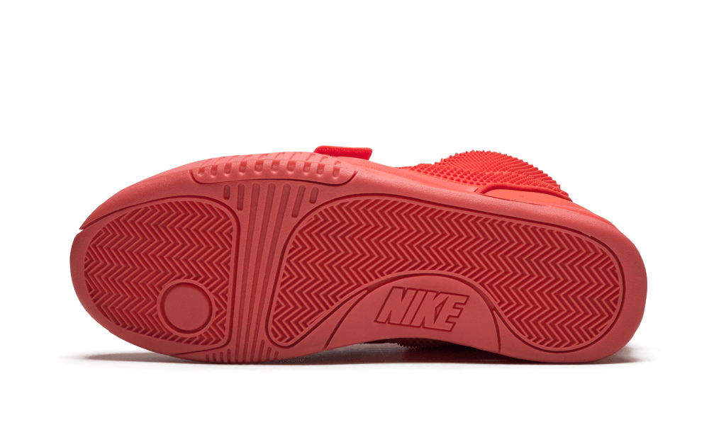

Nike Air Yeezy 2 Red October
The most hyped Nike Air Yeezy 2 in the “Red October” colourway by Kanye West marked the end of his collaborative relationship with giant shoe company Nike. This particular sneaker created the all-red movement in the sneaker world that has been constant ever since it was released originally without any warning or advertisements on the 9th of February 2014. Kanye himself debuted the sneaker while he was carrying out a live performance on “Saturday Night Live” and this sneaker has been highly sought after ever since its release. There has been many imitations of this sneaker but there is nothing that could ever replace it and it has marked the end of an all time great era in sneaker history.